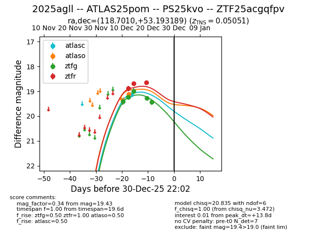
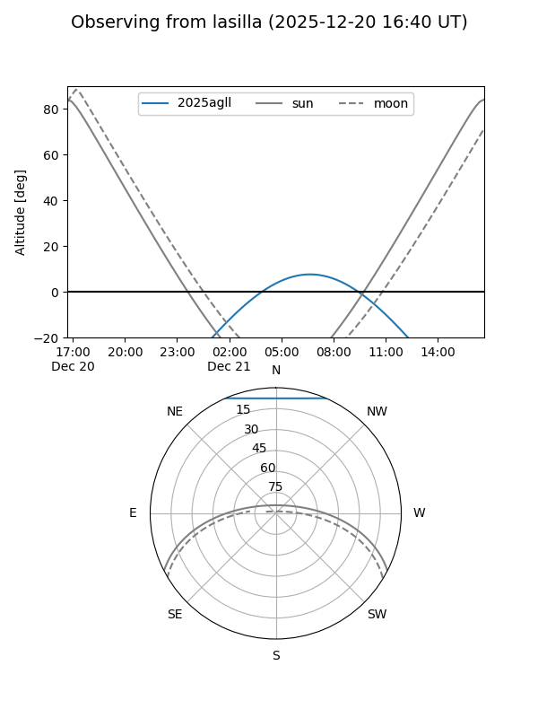
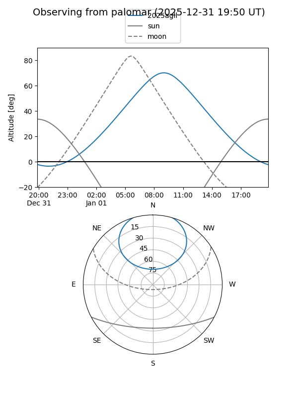
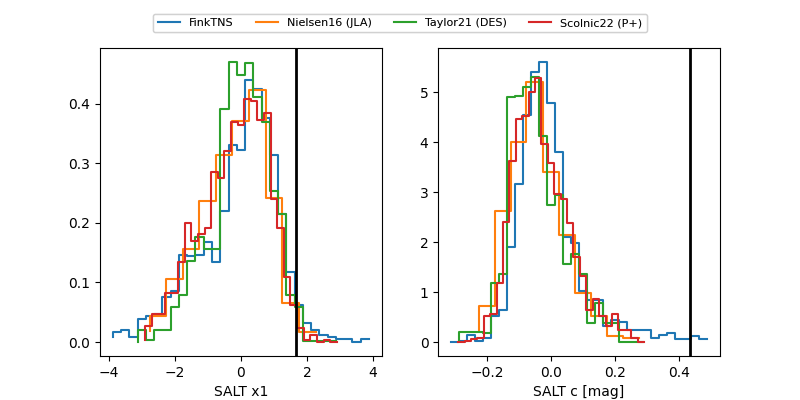

2025agll
Target 2025agll at 2025-12-20 13:04
Aliases and brokers:
FINK: fink-portal.org/ZTF25acgqfpv
Lasair: lasair-ztf.lsst.ac.uk/objects/ZTF25acgqfpv
ALeRCE: alerce.online/object/ZTF25acgqfpv
TNS: wis-tns.org/object/2025agll
YSE: ziggy.ucolick.org/yse/transient_detail/2025agll
alt names
ZTF25acgqfpv (ztf,fink_ztf)
2025agll (tns,yse)
Coordinates:
equatorial (ra, dec) = 118.7010,+53.19319
equatorial (HMS+DMS) = 07:54:48.25,+53:11:35.48
galactic (l, b) = (165.0262,+30.70663)
Flags:
Photometry:
last atlasc=19.14, atlaso=19.12, ztfg=19.28, ztfr=18.64
1 atlasc, 1 atlaso, 4 ztfg, 3 ztfr detections
Lightcurve

Visibility


Additional plots
